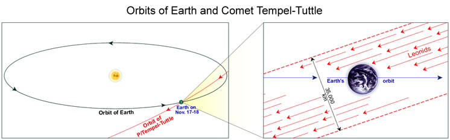

At several times during the year it is possible to observe a higher than average number of shooting stars or meteors streaking across the sky in what is known as a ‘meteor shower’. All the meteors appear to originate from the same point on the celestial sphere (the radiant), and the shower is general ly named after the constellation in which the radiant lies. For example, all the meteors in the Leonid meteor shower (the Leonids) appear to come from the constellation Leo.
A meteor shower occurs when the orbit of the Earth takes it through a meteor stream – the debris left in the wake of a comet. The illustration below shows how the Earth’s orbit intersects the orbit of the comet Tempel-Tuttle every November (right panel), resulting in the Leonid meteor shower. Since all the meteoroids in the stream are basically travelling parallel to each other (left panel), when they hit the Earth’s atmosphere they appear to originate from a single point (the radiant), just as parallel train tracks are seen to converge to a single point in the distance. This point is superimposed upon the backdrop of the celestial sphere, and the meteors all appear to come from a specific constellation – in this case, the constellation Leo.

The activity of a shower can last from several hours to days, depending on how long it takes for the Earth to pass through the meteor stream. It is measured by calculating the number of meteors that a single visual observer would see in an hour assuming a limiting magnitude of 6.5 and the radiant at the zenith. This is known as the zenithal hourly rate (ZHR) and is a measure of the concentration of material in the stream. This changes from year to year as the meteor stream constantly evolves. For example, if the comet has only recently visited the inner Solar System, there should be more meteoroids in the meteor stream and a higher ZHR should be measured. Extremely active showers with ZHR > 1000 are usually called ‘meteor storms’.
Meteor Showers
| Shower | Radiant | Morning of maximum | ZHR |
|---|---|---|---|
| Quadrantid | Draco | Jan. 3 | 40 |
| Lyrid | Lyra | Apr. 22 | 10-20 |
| Eta Aquarid | Aquarius | May 6 | 20 |
| Delta Aquarid | Aquarius | July 28 | 20 |
| Perseid | Perseus | Aug. 12 | 60 |
| Orionid | Orion | Oct. 21 | 10-15 |
| Leonid | Leo | Nov. 17 | 10 |
| Geminid | Gemini | Dec. 14 | 75 |
| The most spectacular meteor showers and their date of maximum. The zenithal hourly rate varies from year to year, but the above indicates what might be expected. | |||